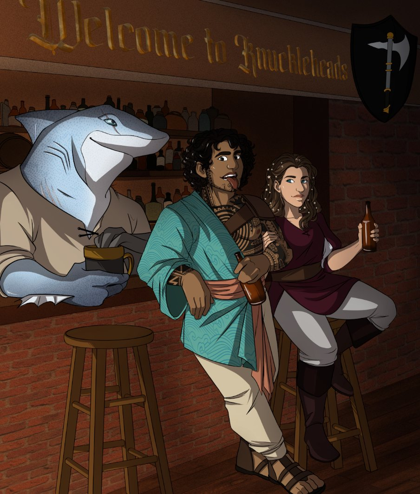
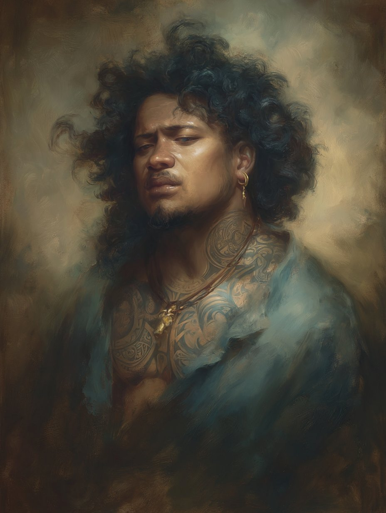
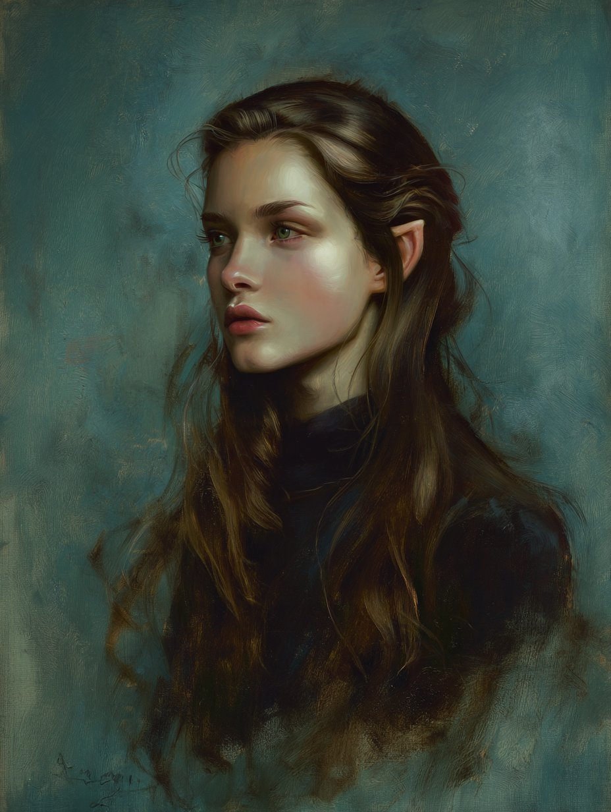

Earlier · Of Note
The Running Joke of Non-Lethal Force
Every time Tulele specifically called a non-lethal blow, the damage came up lethal. Eventually he stopped calling it.



A Calishite-born castaway among Illuskans, washed ashore in Waterdeep with a stolen culture, an axe, and a tongue sharp enough to cost noblemen their reputations. He insults for pay, owns a tavern by accident, and is working — slowly, with significant detours — toward becoming a skald.
Tulele was a child-slave in Calimshan. When Illuskan raiders fell upon the household, he negotiated himself aboard their ship and threw himself wholesale into the culture of his captors: their gods, their oral traditions, their violent ways. He sailed and raided with them until a falling-out with the captain on a last voyage left him in the surf. He walked into Waterdeep, leaned into his foreignness, and discovered the city would pay him to be exactly what he was: loud, marked, and unforgiving with a verse.
He specializes in dub — the public takedown-in-rhyme, delivered for hire or to settle a score. His Calishite slave-tattoos sit alongside the ritual scarification and skalding-marks he has added since; a contradiction he has stopped trying to resolve. His patois is thick. Most Waterdhavians have to lean in to follow him. They lean in.
Owner of Knuckleheads, a tavern in Trollskull Alley acquired at auction after he killed its previous owner in self-defence. The sign reads Welcome to Knuckleheads. The sigil is a black shield with a single axe.
Holds a roughly 15% stake in Trollskull Manor, the boarding house next door, run by Mr. & Mrs. Peabody.
Sworn agent of the Force Grey (Grey Hand) under Vajra Safahr, the Blackstaff. Informal protector of the doppelganger refugees of Bonnie's network.
Knuckleheads grosses ~160 dragons/mo. After Hu (30), the Peabodies (40), and Amifre (20), Tulele clears ~70/mo. Trollskull share adds ~10–15/mo. Gambling operation included.
Snapshot: Barbarian 3 / Bard 4, mid-campaign. Later acquisitions (Barrier Tattoo, council gifts, additional rings) are noted below in Equipment and the Chronicle but do not alter these baseline numbers.
✦ marks proficient saving throw (Strength, Constitution).
Per player's reconciled proficiency list: Athletics & Intimidation (Barbarian) · Insight & Perception (Far Traveler) · Persuasion (Bard). All other non-proficient skills receive +1 from Jack of All Trades (half proficiency).
| Skill | Mod. | Note | Stat |
|---|---|---|---|
| Acrobatics | +1 | JoAT | Dex |
| Animal Handling | +1 | JoAT | Wis |
| Arcana | +3 | JoAT | Int |
| Athletics | +6 | Barbarian | Str |
| Deception | +4 | JoAT | Cha |
| History | +3 | JoAT | Int |
| Insight | +3 | Far Traveler | Wis |
| Intimidation | +6 | Barbarian | Cha |
| Investigation | +3 | JoAT | Int |
| Medicine | +1 | JoAT | Wis |
| Nature | +3 | JoAT | Int |
| Perception | +3 | Far Traveler | Wis |
| Performance | +4 | JoAT | Cha |
| Persuasion | +6 | Bard | Cha |
| Religion | +3 | JoAT | Int |
| Sleight of Hand | +1 | JoAT | Dex |
| Stealth | +1 | JoAT | Dex |
| Survival | +1 | JoAT | Wis |
Light, medium, shields. Simple & martial weapons, hand crossbows.
Strength, Constitution.
Common, Illuskan, Dwarvish, Elvish, Giant. Can swear in Draconic.
Pan flute. Three Dragon Ante (and reputedly the man to see for a high-stakes private game — 1,000-dragon buy-in, location undisclosed).
While raging and unarmored: advantage on Strength checks & saves, +2 rage damage on Str melee attacks, resistance to bludgeoning/piercing/slashing. No spells while raging. 1 minute, ends if no attack/damage in a turn.
AC = 10 + Dex + Con (= 13) when not wearing armor. Shield permitted (+1 magical shield brings AC to 16).
Advantage on Str-based melee attack rolls this turn; attacks against him have advantage until his next turn.
Advantage on Dex saves vs. seen effects (traps, spells) unless blinded, deafened, or incapacitated.
While raging, spectral warriors haunt the first creature he hits each turn. That target has disadvantage on attacks not aimed at Tulele, and creatures it does hit gain resistance to its damage until the start of his next turn.
Grant a d6 inspiration die to one creature within 60 ft. who can hear him; usable on one ability check, attack, or save within 10 minutes. Recharges on long rest. Die grows to d8 at Bard 5.
Adds +1 (half proficiency) to any ability check that does not already include proficiency. Applied throughout the skill table above.
During a short rest, allies who hear his performance and spend Hit Dice regain an extra 1d6 each.
When a creature within 60 ft. makes an attack, ability check, or damage roll, expend one use of Bardic Inspiration to subtract the rolled die from theirs. Charmed-immune or unable-to-hear targets are immune. Tulele's preferred way of ruining someone's day in mixed company.
His accent, tattoos, and manner mark him as foreign. Curious glances follow him; scholars, nobles, and merchant princes will grant audiences he might not otherwise have, eager to hear of his "distant homeland." He milks this shamelessly.
Ten minutes of inspiring speech: up to six creatures within 30 ft. (including himself) gain temp HP equal to level + Cha modifier. At Lv 7 / Cha +3 = 10 temp HP; later levels scale. Usable per creature once per short or long rest. Tulele has put this to work before every serious fight.
Spells Known: 7. Cantrips at will. Cha is his spellcasting ability; DC 15, +7 to attack.
Insults laced with subtle enchantment. On failed save: 1d4 psychic; disadvantage on its next attack. His professional instrument.
Advantage on his next attack against the target — useful before the Dwarven Bane swing.
Awakens the sense of mortality. Frightened until the spell ends; save again at end of each turn. Constructs & undead immune.
One-word command: Approach, Drop, Flee, Grovel, Halt. Affects undead and language-comprehending targets only.
Humanoid regards him as a friendly acquaintance until the spell ends or harm befalls them. They know they were charmed when it ends.
Discordant melody only the target hears: 3d6 psychic and a forced reaction-move away from him on a failed save; half damage and no movement on a success.
1d6 bludgeoning and prone in a 10-ft. radius; loose ground becomes difficult terrain.
Implants a 25-word message in an object that speaks when a triggered condition is met. Used liberally for tavern atmosphere and pranks.
Up to ten words form in the sky as cloud-script. Strong wind ends it early. How he advertises specials.
+2 to attack & damage. Crits on a 19 or 20. On a melee hit: +1d8 damage, or +2d8 against giants. Discovered on the wall of his own tavern during an inventory audit of the previous owner's stock — Tulele simply took it down and adopted it. Unregistered.
1d12 + 4 slashing. His original swing — kept on his back as backup and for sentimental reasons.
For throwing or, in a pinch, for emphasizing a particularly pointed remark.
A dull black, featureless shield that appears to be made from nothingness itself. While wielding it, he is treated as being in dim light when in bright light for the purpose of being perceived (with no effect on his senses).
Saving grace: if he fails a saving throw against a spell or magical effect, he may use a reaction to negate it entirely. Once per long rest.
The Call of the Void. Attuning extends the curse to him; remove curse or similar magic ends it. While cursed, he is unwilling to part with the shield and keeps it within reach at all times. Whenever presented with a scenario that could lead to certain death, he must succeed a DC 10 Charisma save or pursue the most-likely-fatal course of action.
Once per day, during a short rest: add 3d4 hit dice roll to a creature's healing.
Once per day, cast Sleep on all occupants of the room he is in (limited to the room — does not pass through open doorways; in combat, a target rolls a d20 vs. a DM-set threshold).
Once per day, permanently change one of: eye colour (−1 Perception), hair colour (−1 to be assigned), or skin colour (−1 Stealth).
Inspiration-unlocked feature: cast Zone of Truth targeted on one creature (no save, 5 minutes); Tulele also receives it (DC 15 Will save — success: 5 minutes; failure: 10). Used to memorable effect against the intellect-devourer agents at Griffin Hold.
Action to consume: restores 1 HP and sustains the eater for a day.
Sealed parchment messengers — each carries one note to a named member of the party.
A small stone that re-awakens his ancestral ink. When unarmored, his AC is treated as 15 (replacing the usual Unarmored Defense calculation). A standing recognition of the spectral kin already at his shoulder. Permanent.
+5 to Charisma checks. Acquired on the night of the great Knuckleheads card game, when it joined the pot in lieu of additional dragons; Tulele drew a straight flush against Bresnoss Artemel's flush and took both pot and earring.
Grants advantage on any check. Stripped from Bresnoss Artemel's hand at the same card game once Tulele identified him as palming it for advantage.
Ancient dice. When uncertain of an answer, he rolls; above half yields some manner of reply. Cannot be taken from him unwillingly.
A short metal rod with a spongy end; amplifies the voice of whoever speaks into it. Used at Knuckleheads on busy nights.
An enormous greatsword, suspiciously light, painted gold with a dragon-hilt. Decorative. Hangs over the Knuckleheads bar.
A summer that ran from a Trolltide brawl to a council-rebuilt city. These are the moments Tulele tells about — and the ones he won't.
Every time Tulele specifically called a non-lethal blow, the damage came up lethal. Eventually he stopped calling it.
It had to be explained to him, in some detail, that burning a building down with the kidnappers inside was both bad and punishable by death. He accepted this with grace and went looking for another option.
A competing publican escalated his harassment until he tried to kill the party. The party killed him instead. Tulele bought his bar at auction the next week, renamed it Knuckleheads, and hung up the sigil of the single axe.
Hired by one nobleman's son to ruin another, Tulele led a crowd in a public ode to Syphilitic Ord Artemel. The verse circulated in taverns for weeks. Ord's family did not forget.
Bresnoss Artemel — Ord's father — set a hired goon on Tulele, who was beaten nearly to death. Hu the wereshark saved him, dragging him off the cobbles. The medical debt that followed was forged onto Tulele's name with a magical pen and sold to an unknown party. It would compound at 25% daily interest.
Bonnie's network of doppelgangers came under increasing threat. The Manor began to house 20–25 of them in hiding. Tulele helped extract the captured werebear from the city to study with Halm, the monk on Mount Waterdeep — who later revealed that the children sheltering at Trollskull were his agents, placed as a test. The party passed.
Hu's cousin Kahana was found murdered — brutally, hatefully. The party performed Speak with Dead over her body. Tulele asked the questions. She answered: hoods, loud, roaring; she would not join, would not give up her brothers and sisters. A cult of forced loyalty. Black, a tattooed man near the docks, was set up as the intermediary; Tulele paid him a registered axe for a meeting with the slavers at Dock 10, 2 a.m., two nights hence.
A private invitational night. Hu, Katarina, Bonnie's people, Jarlaxle (in his "Benedict" guise), the reporter Elvin, the PI Vincent. Uninvited: Bresnoss Artemel and his half-orc, holding the forged medical debt — by then ~20,000 dragons. Tulele played in three rounds against Artemel and Cassalanter at the same table, made Artemel shuffle and switch hands at a critical moment, then accused him of palming a luck ring. The pot escalated to 80,000. Cassalanter put up his luck ring and then his charisma earring. Final round, double-or-nothing: Tulele's straight flush over Artemel's flush. He took the debt-papers from the pot. The half-orc threw a poisoned dagger into Tulele's shoulder. Hu snapped its neck. Cassalanter took him to his wife to be cured — and incurred a favour Tulele would later repay with the Stone of Golorr.
Katarina, a pirate's daughter trying to make herself respectable as a scribe at the Watchful Order, played cards with Greta and brought the doppelganger-book to be quietly copied. Tulele met her over that thread. He told her: "If we only had tonight, I would be yours without reservation, as who can predict tomorrow? But there is a glimmer of hope that you might be a fellow traveler. Should you advise discretion for a time, by my ancestors I will abide." She replied: "Cheesy, but let us see where this goes." They dated secretly until Mrs. Peabody caught them — and was delighted. A 4-tier cake followed.
During an altercation, the captain-of-the-watch Barnabas read Tulele's mind through a lie and stripped him of the Shield of Void, handing it to Ignatius (the party's dragonborn). Tulele raged, threw off three guards, and charged. Ignatius panicked and transformed into a full dragon out of sheer fear.
Later, when the Grey Hand needed the Nimblewright Detector flown over Waterdeep for reconnaissance, Tulele filed for aerial advertising permission — and made dragon-Ignatius do the flight with the detector strapped to him and a banner streaming from his tail: "Celebrate Midsummer: Butter up in Trollskull Tavern, get Toasted at Knuckleheads!" Ignatius hated every minute of it. Tulele recouped the cost of his medical bills in foot traffic alone.
Rory, the traumatized young doppelganger cousin spared from the slavers, eventually became Tulele's backup bartender. The arrangement was meant to be temporary. It was not temporary.
At the Midsummer tavern festival, Tulele faced a competing performer — Lily, 5'7", green-eyed, blond, daughter of an established skald, working her father's circuit. He took her apart in verse before a room of 100. Earned 4 points of dub damage. Won a golden cowbell, a kitten tattoo, an absurd ceremonial greatsword, and a magical microphone. Verses preserved below.
The party tracked a runaway nimblewright through the Day of Wonders parade and into the wealthy Grulhund estate, where they prevented a kidnapping by Zhentarim operatives. Resulting fine for the unauthorized rescue: 1,000 dragons split three ways. The Grulhunds later lied serenely about the whole affair while serving lunch. The nimblewright was recovered later, hiding in garbage in a very nice cloak, carrying a map: an X over a tomb in the City of the Dead.
The crypt under the Cassalanter mausoleum led to two corpses and one cult survivor. Arn and Seffia took the Stone of Golorr to an old windmill in the Southern Ward — an unregistered Asmodean ritual site. Tulele, recognizing the Cassalanter name, threatened the woman in a rage and nearly tore both her arms from her body before Ignatius pulled him back. He fled upstairs in shame.
Later: the cultist was cursed by the shield. He took the prisoner — quietly proposing to deliver her himself, "to cut my own deal," a plan he was talked out of.
Walking into the Blackstaff's chamber, Tulele realized he was standing in a Zone of Truth. A halfling threw a knife at him as introduction. He chose to tell them the truth: the cultists of Tiamat first, then Asmodeus, then his own intentions. He was offered informal mentorship in the Secret Council. He was instructed to give the Stone of Golorr to Lord Cassalanter — discharging the favour from the card game.
The party received gifts: a healer's brooch for Amifre, an enhanced holy symbol for Ra, a one-use time-reversal orb for Ignatius — and for Tulele, the Barrier Tattoo reactivation stone, returning ancestral power to his ink. AC 15 unarmored, permanently.
With explosive saltpeter barrels seeded across Waterdeep and detonators set for 6 a.m., the party had three actions and roughly six hours. Tulele used the code phrase "Bulgar" with the Captain of the Guard to unlock full emergency access to the city's defences, then organized a city-wide quiet evacuation disguised as a civic drill. No panic. Thousands saved. At Griffin Hold he intimidated the final two drop-agents under the Soprano Longhorn's Zone of Truth; they turned out to be reanimated bodies hosting intellect devourers, donated by Xanathar cultists. The party tracked them to the lair.
The beholder Xanathar nearly killed Ignatius, driving a tentacle toward his brain. Tulele tore the tentacle free in a heroic Athletics check, barely preventing brain-death. The beholder fell shortly after. Loot: Ring of Mind Shielding (Ra), Ring of Invisibility (Amifre), Ring of Radiant Resistance (unclaimed at the time), 10,000 gp.
The neighborhood was flattened in a coordinated attack on the Council. Trollskull Alley, the Blackstaff Tower, the Castle of Waterdeep, the Griffin Fields — all hit. Lomin was lost. Ignatius had been assimilated by Lomin in the days before; the loss compounded. The party held a wake at Knuckleheads. Rory came running in; the streets were full of crater and dust.
Beneath the old summer mill: a vault of dwarvish runes — "three kings bring three keys" — a temple to Dumathoin (opened by a confessed secret), a 10-ft. statue of Gorm Gulthyn over an adamantine trap door (Tulele tried it and took 22 fire damage), and at the bottom, a gold dragon in the form of an elderly dwarf guarding the city's half-million-dragon treasury. A moving speech, magic bags that teleported the gold to the Blackstaff, and Waterdeep's economy was restored.
Commissioned and performance verses, preserved as delivered. Both have circulated in copy among Knuckleheads regulars. Use is not recommended in mixed company.
This here's the tale of Syphilitic Ord
Facts are facts but mum lost the word
Lost her son as well to a halvey's teat
It's only in keeping he mishandled it
Loving's not complicated mate, so how
Did your seed manage to miss her furrow?
I'll grant your plow's small but it made its way to the cow,
The sheep, the goat, the horse, and to Osvaldo's sow
It's astonishing to me that you'd attempt a tryst in profile
Instead of deputizing the screwing in your family's style
No one shipped you two, perhaps you thought that she'd just vanish
Post the blustery delivery of your wee syphilitic package
Perhaps your aptitude for business struck,
With any luck to shuck the gossipy clucks
But your coin's no good if it's refused —
That's twice rejected by your abused
Call me Tulele, and if you must wield
Pay me, and a song will make your enemy yield
All dragons but Ord's are tender to me; ideally
Tomorrow to Knuckleheads; to open and drink freely
I can lap my competition when I'm sitting grabbing teat
Milk a cow and on my way before he's got back on his seat
My pipes will a room of rowdy trolls and dwarves direct to sleep
And my words will bury you from head to tail in cattle shiiit
But you didn't come to hear the tales of a tattooed Quasimodo —
Let's direct the limelight to the lady laggard plough ho.
Lily dear here wants to hoard the mic to herself
Needling the clientele up from her perch on the shelf
You preserve your golden head like a dragon from tales old
But the green-eyed monster fails to recognize the fool's gold
It's all well to win a comp and leave the competition sad
But sadder still is winning at the job you got from your dad.
The fellow traveler. Played cards with Greta. Translated the Asmodean ritual-book and turned the evidence over. Eventually his wife. Mother of his two children.
Saved his life in the alley. Snapped the half-orc's neck in the card game. The shark behind the bar in the Knuckleheads art. Receives 30 dragons a month and loyalty without end.
Spared in the Greta investigation. Adopted in time. Grew up at Knuckleheads. As an adult, ran the manor and then the tavern after Tulele.
The Peabodies caught the romance with Katarina and produced a 4-tier cake within the week. Tulele eventually invited Katarina's mother to live with them at the Manor.
Lomin lost in the bombing. Ignatius assimilated by Lomin in the days before, redeemed and remade. Ra carried the soul-stone for centuries. Amifre left to build Dragonborn's Haven. They all eventually came home to each other in the afterlife.
Brought him into the Force Grey. Named him Grey Hand. Gave him the riddles he kept solving.
Tested him with unseen taps. Took the werebear as student. "Just tell your new friends to come fetch me." Warned that evil would hit by winter; evil was a him.
The father bought his medical debt and forged it; the son was the original Syphilitic. Resolved at the card table when Tulele took the papers in the pot.
Saved Tulele's life from poison after the card game and now owes him no longer; was paid in the Stone of Golorr. His wife was where the Asmodean trail led.
Owner of the Sea Maiden's Fair carnivale. Tulele called him Benedict, because it was amusing to him.
The tattooed man at the nameless dive. Sold meetings. Paid in registered axes.
The reason the Manor housed 20–25 in hiding. Gave Tulele the ultimatum on the werebear. Trusted him.
Read his palm: he would save millions. Gave him the two legendary d6's. Warned of a difficult parting in the near future — death, or departure.
Of those who survived the Heist, Tulele chose to stay.
He married Katarina. The Council gifted him a tree: carve a name or a place into its roots, and you may always return to them. He carved Katarina's name on their wedding night. They had two children. Rory was given a childhood for the first time, and grew up among them; eventually he ran the manor, and then the tavern.
His daughter took the tree and went into the world. His son ran Knuckleheads after him, and Tulele gave him a magical ship — to take him further than he might want to go, to give him the option of going. The boy became a staple of the city he chose; taverns are places of political discourse and political discord, as Tulele had long maintained.
Katarina kept scribing and translated some beautiful, dangerous books. She also became an adept fighter, in her own quiet way.
Amifre left Waterdeep, renounced the Stormwind name, and built Dragonborn's Haven in the south — a sanctuary for orphans, doppelgangers, the unwanted, and the pig Snowball. Ra wandered for centuries. Ignatius lived as a protector and councillor of Waterdeep, and a statue was raised in his honour.
Tulele aged. He was surrounded, in the end, by everyone — Katarina, Rory, his children, Amifre, Ignatius, Ra at the foot of the bed. He passed peacefully. His ancestors — once doubtful of the boy who had walked into the longhouse of his captors and asked to learn their songs — welcomed him with pride. Tulele teased Ra in the afterlife. Ignatius breathed fire. They all laughed.
The smallest choices you made shaped the world
in ways none of you could have predicted.